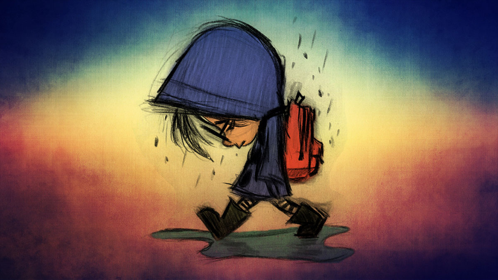
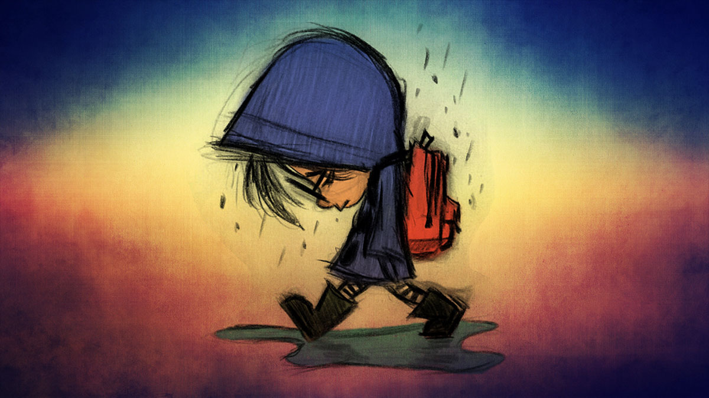

About ADKHAMJON RAKHIMOV
My name is ADKHAMJON and I am admirable, enjoyable, and jolly..
My Classes at IUT
- SOC2110-003 Intenet programming
- SOC2140-003 System programming
- SOC2120-003 Circuit and Lab
- SOC2101-002 Engineering Mathematics
- SOC2110-003 The New History of Uzbekistan
- SOC2101-003 Computer Architecture
My Favorite Movies
- Captain America: Civil War (IMDB)
- Forrest Gump (IMDB)
- 12 Years a Slave(IMDB)
My Moods
Happy:  Sad: 
Sad: 
Fun Facts About My Neighbors
- Ulug'bek Erkinov successful is a word that describes him.
- Sardor Bobonazarov: Loves watch Marvel movies.